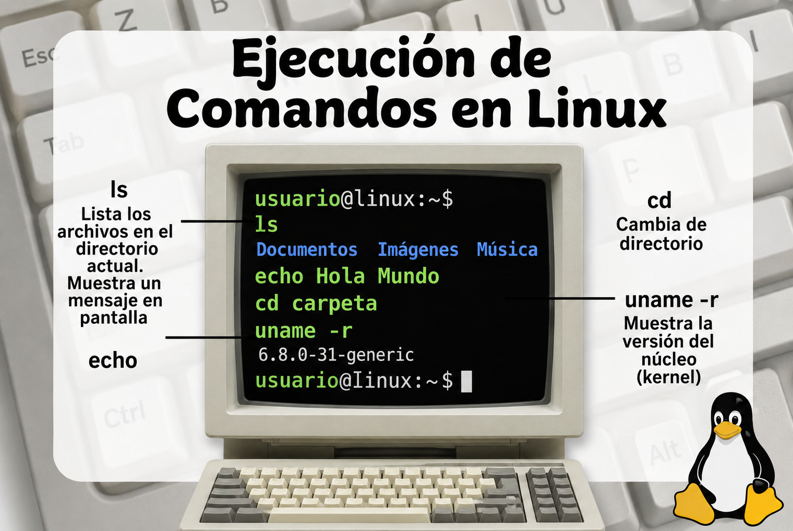
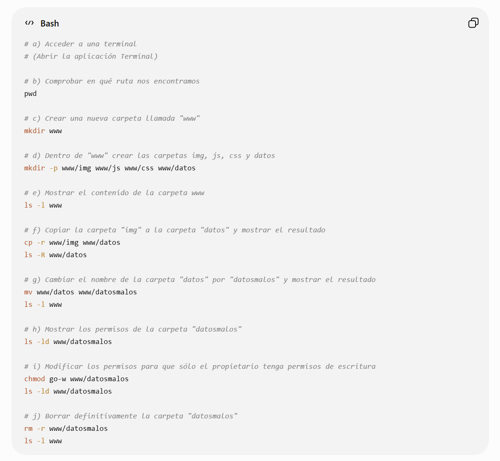

📁
Archivos y Recursos de la Actividad
Descarga los archivos originales asociados a esta actividad:
Módulo formativo: Publicación de páginas web (MF0952_2)
Actividad 3 - Caso práctico
Alfonso Rubio Rioseras
Julio 2026

Descarga los archivos originales asociados a esta actividad:
Pregunta 1. Desde un sistema operativo Linux realice las siguientes acciones, siempre trabajando desde una terminal. Realice una captura de pantalla de cada apartado donde se vean las acciones realizadas:


